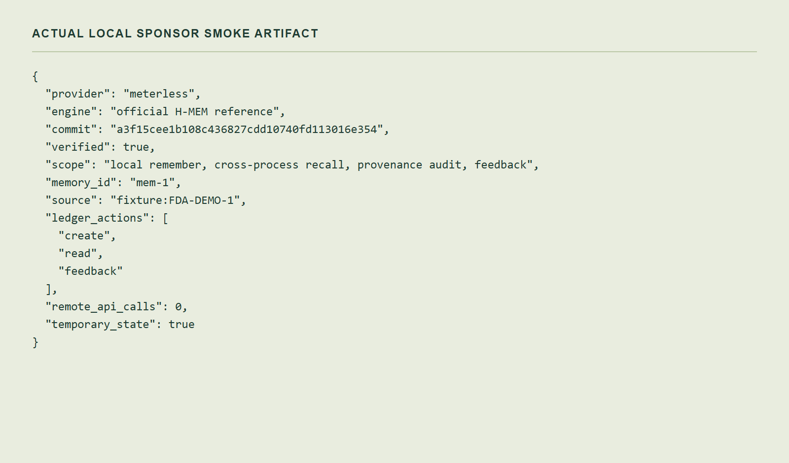

PantryTrace
SYNTHETIC PRE-EVENT PROTOTYPE
5. Sponsor proof and remaining work.

Meterless
Official local H-MEM smoke verified. No remote API calls.
Zetaris
Adapter and mocked tests. Live instance proof pending.
Cursor
Eligible-window development evidence still required.
NVIDIA
Optional adapter. No live provider proof claimed.
The current controller is deterministic. It does not claim autonomous LLM reasoning.
PantryTrace · Evidence before action. Build-window and sponsor work remain.
ACTUAL APP / ARTIFACT CAPTURE · NO OPERATIONAL ACTION EXECUTED
06 / 06